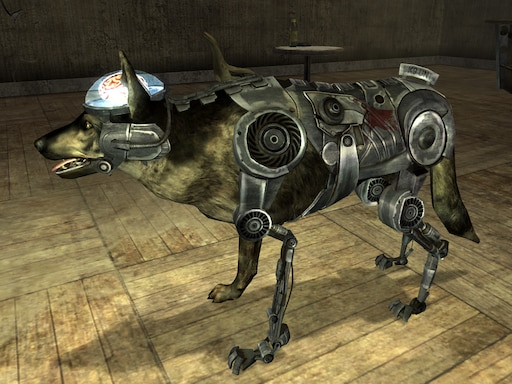

HUMANOID ROBOT: La unidad de combate principal del ejército del Calculador eran los robots. El primero en
aparecer parcialmente en el juego fue el brazo mecánico, encontrado en Rock Falls. Los saqueadores lo
estaban estudiando, después de haber estado luchando contra una nueva amenaza del Oeste, insinuando que era
el ejército del Calculador. Obtener el artefacto era uno de los principales objetivos de la Hermandad del
Acero en el ataque a Rock Falls. El segundo robot encontrado fue destruido por los defensores de Junction
City. De hecho, ya había sido severamente dañado después de masacrar a un grupo de supermutantes.
MR.HANDY:El primer Mister Handy fue introducido en el mercado de la robótica en 2037 por General Atomics
International, como una unidad de construcción y mantenimiento de propósito general. Fue ampliamente
utilizado en los mercados estadounidense y mexicano (especialmente después del terremoto de la Ciudad de
México en 2042), y era un diseño resistente y confiable. Tan confiable que solo recibió una actualización
importante de hardware en 2039, para eliminar un error que causaba interferencias en la operación de los
múltiples brazos. La unidad de energía nuclear Calpower 238B y los modos de auto-mantenimiento fueron clave
para su éxito, asegurando la longevidad de cada robot. Para minimizar el costo de mantenimiento, cada Mister
Handy fue diseñado para realizar la reposición del combustible nuclear y la limpieza de radiación. Cada
unidad podía realizar el mantenimiento y reparación de otras unidades (no podía realizarlo en sí misma).
CYBER-DOG: Los Cyberdogs tienen la apariencia de caninos cibernéticos (aunque existen dos excepciones) con
una esclerótica amarilla (sólo el "modelo policial de cyberhound Mk III" tiene una esclerótica normal y
blanca). Estos tipos de Cyberdogs también son llamados "unidades K-9". A pesar de estar altamente
modificados con piezas electrónicas, no son afectados por las armas de pulso. Sus modificaciones incluyen:
Mejoras robóticas en gran parte del cuerpo, incluyendo extremidades y cola artificial.
Reemplazo de la mandíbula con una mandíbula robótica y dientes inferiores metálicos.
Extracción del cerebro del cráneo y colocación en un contenedor protector encima de la cabeza, lo que les
permite verificar su sistema orgánico y cibernético, así como mejorar su percepción. Este cerebro puede ser
cambiado por otro, ya que un Cyberdog puede sufrir degeneración neural con el tiempo, lo que resulta en la
interrupción abrupta del cerebro. Una vez que se cambia, el Cyberdog mantiene la misma personalidad, sus
recuerdos y manierismos que tenía antes de convertirse en un Cyberdog, con la personalidad adicional del
cerebro fresco del perro añadiéndose a la mezcla, posiblemente creando una mezcla de atributos. 